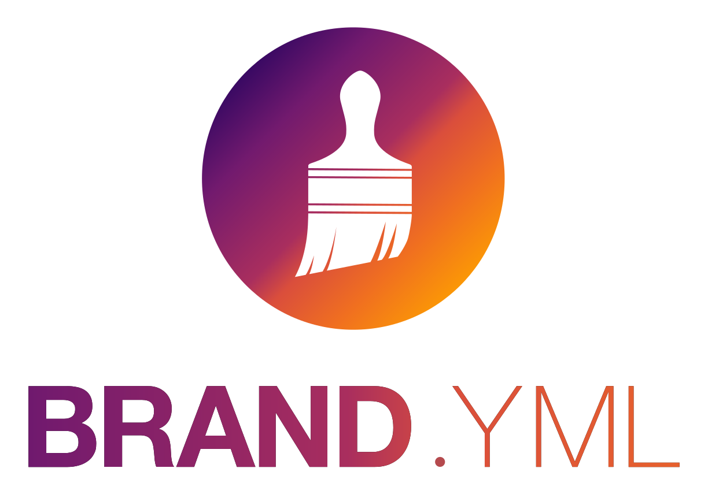

flowchart LR A[rapport.qmd] -->|Pandoc| B[rapport.typ] -->|Typst| C[rapport.pdf]
PDF sans frictions : Typst dans vos projets Quarto
Posit / rOpenSci
16 juin 2026
My turn
Quelques slides pour poser les concepts clés.
Our turn
Démo live — vous suivez dans votre éditeur.
Your turn
Exercice en autonomie avec chronomètre.
format: typst — un PDF sans LaTeXVous avez un document Quarto et vous voulez un PDF ?
D’autres options existent (toc, mainfont, number-sections, linestretch…) — on les verra en démo.
keep-typ: true — comprendre les coulissesflowchart LR A[rapport.qmd] -->|Pandoc| B[rapport.typ] -->|Typst| C[rapport.pdf]
Le fichier .typ intermédiaire vous permet de :
_brand.yml — un doc stylé en un fichierUn seul fichier YAML pour définir l’identité visuelle de vos documents :
_brand.yml à côté de votre .qmd
https://posit-dev.github.io/brand-yml/Faisons ensemble !
rapport-starwars.qmd dans votre éditeurformat: typst et rendez le documenttoc, mainfont, papersize…)_brand.yml avec 2 couleurs et une police Googlekeep-typ: true et explorez le fichier .typ généréÀ vous !
rapport-starwars.qmd et ajoutez format: typst, puis rendezpapersize, toc, mainfont…_brand.yml avec vos couleurs et une police Googlekeep-typ: true et ouvrez le fichier .typ généréPépites pour aller plus loin
```{=typst} pour injecter du code Typst directement dans votre .qmdgt (R) et Great Tables (Python) avec du CSS sont traduits automatiquement en Typst par Quartopdf-standard: ua-1 dans le YAML pour un PDF conforme au standard d’accessibilité PDF/UA-1Plus de détails sur la page Ressources